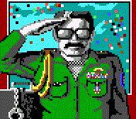

[If you don't see the contents frame to the left, you can load it here. If your web browser does not support frames, this will not work.]
Welcome to the information storehouse dedicated to providing you with all you will ever need to know about the computer role-playing game Wasteland.
Included here are links to the Wasteland Frequently Asked Questions document as well as the paragraphs for the game. These two documents won't give you a cheating edge. However, if you are stuck, then proceed guilt-free into the depths of the rest of the Wasteland Underground, compiled by the real-life Ranger Ben and friends.
If you are looking for the Fountain of Dreams portion of this archive, visit The Wasteland Underground -- Fountain of Dreams Room.
If you have an addition to this mass of goodies, visit the Wasteland Communications Center and mail me--I'll add it to these pages.
Original commentary by Michael P. Owen (April 27, 2000). Corrections by Munir Nassar (December 20, 2000, Snake Squeezins post 2287), Josh Frappier (November 30, 2001), Michael P. Owen (updated June 16, 2002)
Here is the (corrected) armor-class table for armor that can be found in the Wasteland:
Leather Jacket: 1
Robe: 1
Bulletproof Shirt: 2
Kevlar Vest: 4
Rad Suit: 5
Kevlar Suit: 6
Pseudo-Chitin Armor: 10
Power Armor: 14
Commentary by Steve Hunter (April 2, 1998)
Speaking to the Junk Master does not reveal the location of Base
Cochise. Only completing the Sewers under Vegas will.
Commentary by Larry Stegner (November 7, 1999)
The ultimate tool for [raising your fighting skills] is Brother Goliath.
To raise Fisticuffs
or Brawling you need AC 10 at least. Always use the least dangerous
weapon you can, (i.e., a Book for Brawling, etc.) He can raise your guys
up to level 7 in most fighting skills. He can't move, so stand back and
plink at him. Be careful not to kill him he is too good a resource.
Commentary by Brain French (January 19, 1998) and update by Kid Kibbitz (June 12, 1998)
I know a way to get your characters a lot of experience quickly in
Wasteland. I don't know if this is common knowledge or not, but here
goes.
What you need to do is make sure all your PC's have the climb ability. Then, hire an NPC that does NOT have the climb ability.
Take your party to the casino in Vegas that's NOT Fat Freddy's. There should be a trap door set in the floor behind a counter. Go down it, and you'll be inside a basement that's pretty trashed. Along the north wall, there is some rubble. Move your party over the rubble until they hit the wall, then keep moving. Put something over the arrow key and go get a Coke or something. What should happen is that your party continually climbs the rubble, gaining XP as they go. The NPC is the one holding them back, so they never actually make it over the rubble. I got all my characters to Supreme Jerk this way. Needless to say, the rest of the game was pretty easy :)
Note: This trick also works at the Railroad Clans map, but it MUCH slower. Just climb the sandhills over and over and over.....
Commentary by Venato Caine (September.22.1998)
The climb skill and cheat is beneath through the east door next to the bar in
Spade's Casino. Go through the first north door and use a rope on the
hole, then climb skill to get down. As a sidenote one of the Card Sharks in
the NW of the casino has a nice laser pistol you can get for minimal
effort.
Commentary by Codie Vickers (October 5, 1998)
Also, in Needles there are several sand hills.
If your characters keep trying to climb them their climb and acrobat skills
BOTH go up until they get to 3.
Also, on top of Base Cochise, you can climb around on the outside walls to get
climb of 8 or 9!
Commentary by Alexander J. Pirchl
Finally, we now know the password for the Black Market in Darwin Village!
It's "CRETIAN", not "CRETIN" as the Wasteland Survival Guide (Clue Book) says.
Alexander said he found it in a small file. Does anyone know if this password
can be found from within the game itself?
Commentary by William John Brixius (September.24.1998)
The password for the black market in Darwin Village (cretian) can be
gotten from the bartender. He also gives you the password for the lower
level of Darwin Base (proteus). (Paragraph 32)
Commentary by Todd Maki (April 22, 1996)
For anyone else who plays on a Commodore 64 here is a cheat which
may work on the Apple platform as well. Try this anywhere in the game you
want extra equipment, say the Sleeper Base weapons area.
(1) Before start to play Wasteland make an extra set of disks and keep
them unused.
(2) Before you go into a new location (Example from above... going from
level 1 to level 2 at Sleeper base) swap your used disk for the unused
disk of the same number. Then select "y" to enter the new location and
get whatever you need. *** Do Not Leave This New Area & Do Not Save In
This Area Yet ***
(3) ONLY RETURN TO THE AREA YOU ORIGINALY CAME FROM. Before you leave the
area and return to the area you came from (Level 1 from above.. Enter a
New Location "y/n") replace the unused disk currently in your drive with
your original used disk. (This way nothing has been altered on the
"Unused Disk") You can go into the same area as many times as you want
and get equipment over and over again.... (Very helpful when you find good
weapons or armour.)
Commentary by Eugene Tan (June 24, 1996)
The swap disk cheat works on the Apple ][. I should know. . . .
I finished the game on my old ][e! (You can write Eugene at
31tan2@wmich.edu for the details.)
Commentary by Clem the Hick (October 24, 1996)
With disk swapping cheat on the Commodore 64, you can win the game repeatedly,
though the second time through and on, you won't get the huge bonus from
Ranger Center at the end.
Commentary William J. Altman (November 13, 1996):
To duplicate your items (and equip your group of seven with power armour
and proton axes) you can use this simple trick if you are running the
game off an Apple ][e.
Note you will need excessive cash for this. Enter a store. Sell the stuff you want to copy. Leave. Reenter the store. Replace the current game disk with a blank one. Buy your stuff and leave. When leaving it will give some error and ask ou to check the disk. Replace the game disk. When you go back into the store it will be as though you never bought anything. This is real handy for the people who happen to run out of ammo while running through the sewers and drain the stores dry (like myself the first time).
Commentary by Jimmy (December 29, 1999)
I played wasteland for the first time on a C-64. With this program you only
had the floppy disks. I found that if you had two sets of the disks, and one
extra set of disk one, you could copy your players from one disk to another.
The same process can be done by copying the total program onto three disks.
The first disk should have a copy of your characters, simply enter the Ranger
Center, then when you leave place the new unplayed copy into the drive.
Now your players should be able to start the game over again. I have used this
process to obtain several proton axes, and also to gain large amounts of
experience points.
Commentary by Cliff (October 18, 1997)
When I played Wasteland on my C64 (back in 88-89), I used a cheating method
which could duplicate any armor an unlimited number of times. I forgot
how to do it though and was wondering if anyone else had discovered the cheat.
Commentary by James Dunlap (September 26, 1998)
The way to duplicate items on the C64 is this:
The energy weapon skill is a must for winning Wasteland. Here are the locations of the libraries where you can pick up this skill:
And now for some commentary from the field:
Commentary by Jody Webb
In my experience, an Energy Weapons skill level above 8 seems detrimental.
My characters seemed to be less accurate, and to inflict less damage when
using an Energy Weapons skill of above 10 or so.
Commentary by Black Raven (January 16, 1997)
With the neg-skill cheat, your energy weapon skill does not go bad after the
10th level. In fact, your accuracy rate improves dramatically. This is also
true with Assault Rifle, AT Weapon, etc.
Commentary by Zoster (July 1, 1999)
Another trick to get 4 or more Rad Suits in about 5 minutes is to get
Christina and take hers and her geiger counter. then buy 4 tnt and go to the
south-west part of needles and go into the waste pit. Go down and straight
across from the steps. The first door should crumble. The next one needs
to be blown up. Go down the stairs and blow open the next 2
doors, and kill the pit dweller. Go to the south-western door and blow it
open. You'll find about 1 or 2 NATO's and 2 or more rad suits... Next get 1
TNT and go to Las Vegas. Go find the mushroom cult and go in. Use the
passwords and go up. Blow open the eastern door right before entering the
reactor room. There should be 2 rad suits. There ya go.
Commentary by Private 1st Class Kennon Ballou (May 14, 1998)
You can use a variation of the disk swapping technique from the C64 or Apple on
the IBM by making a backup copy of the two files GAME1 and GAME2.
GAME1 contains the maps for the outside map, and the first
few areas, such as Highpool, Ag Center, etc. GAME2 contains
the other maps. What I did many many times was to do a map
like Vegas, get as much as possible from it, then leave there
and go to the desert map. I'd save the game and then quit. In
DOS, I'd copy my GAME2 backup onto the GAME2 file used by
the game. All of the GAME2 maps would then be reset, but not
the characters or the GAME1 maps. The party info is stored
in whichever map they are in; i.e. if you are in a GAME2
location and save over GAME2 your party will be replaced
by Thrasher, Angela Deth, etc.
Forgery can get you past the Webs of Deceit in the VR Maze (right after the "pool room"). Much more reliable than using IQ.
Commentary by Drokk Sinner (May 4, 1998)
Gambling is actually an extremly useful skill. It can help you level very fast
and give you an infinite supply of cash. See to it that all your chars have
decent luck and spend 1 of those valuable skill points on luck. When you have
enough money and can get into Vegas without dying, go to the nomads camp and
play at the slot machine. Play until one of your characters have a gambling skill
around 9-10, using a macro of course (remember to level once in a while, you can't
have a higher skill than your current level), and a luck around 17-18.
Then go to Vegas and play some 3 card monty. Preferably make a macro for it.
Let the macro go on for some 15 minutes, in some way locking the macro key. Now
you should have around $50000 profit and and some 10 levels (of course this depends
on which level you was on when you started) waiting for ya!!! I think that you get
one xp for every $ you make! Repeat with all your chars and you'll get cash for the
rest of the game and an edge in the levels. You could of course let the macro run
while you sleep or something, but that would be a bit to much cheating, eh? ;)
Commentary by Jens Hausherr (November 9, 1998)
If you are in need of some skill levels in either AT Weapons or
Demolitions just collect some Howitzer shells and fire away. I gained
skill levels several times at the second or third shot with the
howitzer.
Locations of the keys (Blackstar, etc.) in the Guardian Citadel.
Commentary by Doomster (November 24, 1997)
I am wondering if there are different versions of
Wasteland (on the IBM PC). One reason is because of
several differences that I noticed between the game I
played and the ones people have been writing about. For
one, I never found a sonic key in the Golf course in Vegas.
Here at the HQ-Grid are some full maps of some of the locations of the Wasteland. Visit maps of the Wasteland game provided by Ranger Alexander Pirchl. And now, for some miscellaneous commentary about the maps of the Wasteland.
Commentary by Steve Hunter (April 2, 1998)
Never reset a map unless you are on the main map. I once saved in Base Cochise on
level 2 and when I reset I found myself on level 3 with the doors shut behind me. I
lost that set of characters since the only way out was to defeat the base but I
had no plasma coupler.
Hole #2:super skills.
If you've ever gone to a library, when your skill is high enough, it shows a
255 to increase it, now i'm not sure if you have to gamble first, but when you
select it, it will add a skill point, and add a stat point (give you a point i
the ability and your reserve skill points). You can increase it up to your
level, so you need experience. One way to do this is to gamble,. Once you get
your skill to 8, use this trick (note, you must go into the library with at
least one skill point to start out with), and increase your gambling skill. No
make a macro, usually some thing like this:
Y-SPACE BAR-1-1-SPACE BAR
This will (in Fat Freddy's): Yes for playing, select player 1 to get the loot,
which is item one. The best thing is, you get experience points for winning,
and (oh yeah, the name ac sells for 32,000 cash) you won't lose at a gamble
skill that high. What you do is get a piece of tape, tape down the macro key,
and do something else for an hour or so. When you get back, you'll have some
levels waiting for you, as well as a surpluss of cash.
Commentary by Clem the Hick
I saw you guys had the negative skill point cheat (I never knew how it worked,
though), and thought I'd add that I had figured it out previously on my C-64,
and I noticed that some of my characters got 68-71 skill points the first time
they'd raise a skill to level eight. It didn't always work, but seemed to work
best when the chars. were at a certain level (though I don't remember what it
was--that was six years ago!)
Commentary by Force Commander Steve Hunter (April 24, 1998) When using the negative skill trick, skills from the higher IQ groups like energy weapon require only level 6 for the bug to work.
You probably know that the Nightmare in Finster's Head is one of the toughest creatures to defeat. However, you may not know that it gives you the most experience if you do kill it, and of course twice that if you beat it with melee weapons. Here is some commentary about that....
Commentary by Codie Vickers (October 5, 1998)
If you have a proton ax when you jack into Finsters Head and lots of brawling
skill you can kill the nightmare in just under an hour. You get TONS of
experience. Also, if you have a disk editor you can fiddle with NPC character
attrbutes/skills/possessions/etc (this includes CLONE npcs!) and then have
them join the party. With brawling skill:255, str:255 and dex:255 you can
kill the nightmare with a proton axe (or a canteen or a crowbar or anything
you can get readied as a weapon) in one or two rounds.
Commentary by Doomster (November 24, 1997)
I cannot get an Onyx ring in the Guardian citadel. I saved
the game just before getting the loot in the monks' bed and
every time, I never get the Onyx ring.
Commentary by Ranger Ben (February 5, 1999)
See the February 5, 1999 commentary on Ugly
John's stronghold for a clue for help with not finding an onyx ring.
operating system compatibility issues
Platform: IBM PC under Windows Millenium Edition
Commentary by Ranger Munir (April 5,
2001, Snake Squeezins post 2381)
Oh yeah, easy....
Alternativly, you can use the bootdisk to install the game from the CD using good old DOS commands... let me know if you need help with DOS. (In a later post, Ranger Munir clarified his instructions:) Go to a machine that has Win98SE, and make a bootdisk there. This disk will have CD-ROM drivers to run your CD-ROM and enough memory to run the game. If you need a bootdisk I can send you a ".img" file of a working bootdisk. With a utility like rawrite (I can get that too), you can create a bootdisk.
Commentary by Ranger Nepomuceno (April 6,
2001, Snake Squeezins post 2383)
You need DOS mode in Win ME. Check these sites on how to
make DOS mode in ME:
Platform: IBM PC under Windows 2000
Commentary by David Bremner (February 26, 2000)
Both FoD and WL run fine under Windows 2000 Professional RC2. Just don't try
to switch to another application.
More commentary by David Bremner (June 10, 2001, fod post
48)
Under Windows 2000, WL runs fine. It would hang the computer under Beta 3,
but I guess they fixed that.
Commentary by KillJoy (June 11, 2001, fod post
49)
Running [Windows 2000] here as a matter of fact.... [Wasteland] runs fine,
no problems whatsoever.
Commentary by Codie Vickers (October 5, 1998)
In Vegas, at Spade's Casino, there is a loose board you can step over if you
make a perception check. Save the game and stand on the loos board and just
wait (esc) over and over. This will increase your silent move AND perception.
If you've ever wanted to print your Ranger statuses straight from the game to your printer, just hit the "p" key on your keyboard while in the game. Out from your printer will spew all your Rangers' vital stats, including skills, attributes, weapons and rank.
Once you've won the game, print out your stats, and send them to Ranger Headquarters where they'll be posted for all the cyber-world to see!
|  | Here it is. The COMPLETE listing of Ranger ranks. We hereby salute each brave Desert Wasteland Ranger for the hard work, sweat, blood, and courage needed to attain each and every one of these ranks. You've earned these ranks, Rangers! |
| rank:title | rank:title |
|
1:Private 2:Private First Class 3:Specialist 4:Senior Specialist 5:Corporal 6:Lance Corporal 7:Command Corporal 8:Grenadier 9:Fire Grenadier 10:Grenadier Major 11:Master Grenadier 12:Sergeant 13:Sergeant 14:Technical Sergeant 15:Technical Sergeant 16:Sergeant Major 17:Sergeant Major 18:Master Sergeant 19:Master Sergeant 20:Sergeant Argeant 21:Sergeant Argeant 22:Cadet 23:Cadet 24:Cadet Specialist 25:Cadet Specialist 26:Combat Cadet 27:Combat Cadet 28:Command Cadet 29:Command Cadet 30:Lieutenant 31:Lieutenant 32:1st Lieutenant 33:1st Lieutenant 34:Fireteam Lieutenant 35:Fireteam Lieutenant 36:Fireteam Lieutenant 37:2nd Lieutenant 38:2nd Lieutenant 39:2nd Lieutenant 40:Lieutenant Argent 41:Lieutenant Argent 42:Lieutenant Argent 43:Captain 44:Captain 45:Captain 46:Combat Captain 47:Combat Captain 48:Combat Captain 49:Technical Captain 50:Technical Captain 51:Technical Captain 52:Command Captain 53:Command Captain 54:Command Captain 55:Captain Argent 56:Captain Argent 57:Captain Argent 58:Major 59:Major 60:Major 61:Fireteam Major 62:Fireteam Major 63:Fireteam Major 64:Specialist Major 65:Specialist Major 66:Specialist Major 67:Technical Major 68:Technical Major 69:Technical Major 70:Major Argent 71:Major Argent 72:Major Argent 73:Lance Colonel 74:Lance Colonel 75:Lance Colonel 76:Lance Colonel 77:Lieutenant Colonel 78:Lieutenant Colonel 79:Lieutenant Colonel 80:Lieutenant Colonel 81:Fireteam Colonel 82:Fireteam Colonel 83:Fireteam Colonel 84:Fireteam Colonel 85:Division Colonel 86:Division Colonel 87:Division Colonel 88:Division Colonel 89:Colonel Argent 90:Colonel Argent 91:Colonel Argent |
92:Colonel Argent 93:Lance Commander 94:Lance Commander 95:Lance Commander 96:Lance Commander 97:Lieutenant Commander 98:Lieutenant Commander 99:Lieutenant Commander 100:Lieutenant Commander 101:Commander 102:Commander 103:Commander 104:Commander 105:Technical Commander 106:Technical Commander 107:Technical Commander 108:Technical Commander 109:Force Commander 110:Force Commander 111:Force Commander 112:Force Commander 113:Brigadier General 114:Brigadier General 115:Brigadier General 116:Brigadier General 117:Lieutenant General 118:Lieutenant General 119:Lieutenant General 120:Lieutenant General 121:Major General 122:Major General 123:Major General 124:Major General 125:Technical General 126:Technical General 127:Technical General 128:Technical General 129:General Argent 130:General Argent 131:General Argent 132:General Argent 133:General Argent 134:General Argent 135:General Argent 136:General Argent 137:General Argent 138:General Argent 139:Imperial Scarscalp 140:General Argent 141:General Argent 142:General Argent 143:General Argent 144:General Argent 145:General Argent 146:General Argent 147:General Argent 148:General Argent 149:General Argent 150:1st Class Fargo 151:General Argent 152:General Argent 153:General Argent 154:General Argent 155:General Argent 156:General Argent 157:General Argent 158:General Argent 159:General Argent 160:General Argent 161:Photon Stud 162:General Argent 163:General Argent 164:General Argent 165:General Argent 166:General Argent 167:General Argent 168:General Argent 169:General Argent 170:General Argent 171:General Argent 172:Revenant Argent 173:General Argent 174:General Argent 175:General Argent 176:General Argent 177:General Argent 178:General Argent 179:General Argent 180:General Argent 181:General Argent 182:General Argent |
Here are some miscellaneous comments about getting fast and free promotions, sent in by dedicated and efficient Rangers in the field.
Commentary by Ben Spangler (August, 1996)
The exact location of the free promotions spot:
Starting at the NE corner of the Darwin Base, 1 pace N, 1 pace E, 2 paces N, 2 paces E, 10 paces N, and 8 paces W. This will position your party in the middle of a hot spot on the map. Now, just shove a pencil in ESC key, to make time pass quickly, and check back in about an hour for your free promotion. The free promotions coupled with the super skills make an indestructable party.
Commentary by Private 1st Class Kennon Ballou (May 14, 1998)
The night terror in Finster's mind maze is definitely killable. I equip
my guy with a proton axe, send him into the maze, and make a macro for
one round with the beast. Then I tape down the key and come back in half
an hour. It takes forever, but with power armor the character will not be
hurt at all, and when you kill him you get 64,000 exp. Then you leave darwin,
reset the GAME2 file [see file swapping],
and do it again! I got many many many many levels on
all of my characters by doing this endlessly. 64000 will give each char several
promotions the first time, but it gets to a point where you only get one
promotion per 64000 exp.
Commentary by Steve Hunter (April 2, 1998)
The best way to gain experience is to arm all characters with a proton ax or
similar weapon and stand in Base Cochise on the ground level between the ladder
and the door which requires a secpass b to enter. All random encounters will
appear at distance 10. A few hours of fighting these random encounters should
get characters from cadet to captain or more.
Commentary by Jascha Walter (June 10, 1998)
If you run up and down the glass window at Ugly's hideout, you get
unlimited promotions. [editor's note: see also Ugly
John's Stronghold
Commentary by Richard Clayton (March 12, 1999)
Yes, this does work- at least, with the IBM PC version. I don't know
about the Apple version. This is probably the easiest, most acessible
way to gain fast levels- just set a macro to walk a square north, then a
square south. Repeat as necessary.
As to whether or not this is cheating- well, that's up to you. I
don't use it- there are more entertaining ways to gain levels. :)
Commentary by Malakorr@aol.com (March 8, 1999)
In Spade's Casino... when you encounter the squeaky board upstairs. Save your
game, put the character with the Silent Move skill in the lead and create a
macro to just walk back and forth over it. You'll need to "babysit" your party
for a while... cause it takes a bit to get them up high enough that they won't
get caught by the guards in the room to the south. Be sure to have perception
for all of your characters tho... I recommend that the macro be as many
keystrokes as you have the patience for with S-Y-N at the end of it... once
the macro is created just wedge the key down and go do something for a while.
Once you think the macro has run long enough just radio in for a LOT of
promotions. I managed to get my characters up from Private 1st Class to
Supreme Jerk.. took a loooooong time but I did it. I reccomend doing it while
you sleep. It's also a good idea to enter Vegas from the top north corner,
pick up Covenant and leave to the right side of the map before you do this,
he's a good NPC and you can level him up too.By the way, I did this on the IP
10th Anniversary Edition of the game, in DOS. If you do get caught, just exit
fight them, exit without saving and start again, your perception only goes up
to Lvl 3 tho.
Commentary by Earl Needhammer (July 2, 1999)
In Quartz, on the "roof" next to Ugly's hideout (Where you use the rope to
climb up, and then bust through the glass to the floor below)... if you set
up a macro for your party to move up and down IMMEDIATELY next to the glass,
you will not only push their perception to 3, but you also gain Experience
AFTER their perception's topped off. And this works ANY time. Its a slow
level-gainer, but it is a level gainer. Basically, you go to the glass "You
see figures moving... ...surprise them", then set up your macro (I started at
the top of the "glass" amd worked down, then back up, so that macro looked
like "Down (x10), up (x10)"; then hold the key down for a while, and radio.
Good for beaucoup promotions early on, and maybe one or two after your crew
has advanced higher.
Have you ever killed the Red Ryder himself? If you attack the juvies in HighPool next to the river/lake when they laugh at you for falling in it, the Red Ryder himself comes out with his bb gun. If you kill the Red Ryder and then loot his one measly clip, all of Highpool is destroyed. The dorms are abandoned, the shop closes, you no longer have access to the cheapest doctor in the Wasteland, and the place looks messed up. I always thought of it as destroying the peace of HighPool symbolized by killing the Red Ryder. Weird.
For some more commentary about this and Wasteland in general, check out Wasteland! (The Greatest Game of All Time) by John Strohm. This guy has a 1-minute walk through of the game here as well.
4.Dec.1996
Hey Ranger Ben! It's me again, I noticed that one of my tricks wasn't on your board. Thats very sad, it's one of the most useful there is! It allows you to rest as long as you like without being attacked, great if you are wounded.
It's like this-if you have a "dummy character," like the ones you disband forever right after you get them (Jackie) they can be extremely useful to you. Take them somewhere (I found the area just east of Ranger HQ the best. To get there enter, exit and go right.) and leave them there. Then play with your real group and do what you normally do. Then when you get really injured badly (Vegas Sewers) heal them back to UNC and switch back to the "dummy." Then let time pass. As long as they don't die or get UNC'ed then the other group won't be switched back to and they won't be aatcked! I found this really useful. But in base Chocise you need to have all four parties toghter so this would be almost a death sentence to your one, lone character. So add them or ditch them before getting too far inside. Thats all!
7.August.1996
I recently discovered a new "cheat" that works on the apple ][ emulator
version and perhaps others. It only works once, though, and the party
must not be carrying any gas masks for the cheat to work. Here it is:
If you carry a corpse or two when you chat with Fat Freddy and refuse to accept his job offer, you'll be gassed and taken to the prison northeast of Vegas. At this point, you'll notice that your dead companions have been brought back to life! Then it's only a matter of using dexterity on yourself (several attempts may be necessary) and you'll be able to move freely about the cell. Use picklock on your cellmate and hire him. Covenant will get rid of the block of concrete that obstructs your way out.
The resurrected characters usually have a constitution of 1 but occasionally they have 255 constitution. The cheat is probably related to the bug that makes negative skill points possible.
I have the img file in case you need it.
Many Ranger parties have noticed that sometimes there just ain't enough servo motors to complete the game. Specifically, it takes quite a few to build the robot Max. Here's where they are, and if you've looked there, and still don't have enough, consider yourself the unlucky recepient of a bug in the game. Sometimes there just ain't enough!
Stagecoach Inn:
The only other way to get past not building Max is to restart the maps. Just kick butt with your characters through what you've already done, and hope that the restarting of the maps will give you the motors you need to build Max.
Commentary by Clem the Hick
The skill silent move helps in a few places in the game. Only one character
needs it and I think it only works if that char leads the party. One place
it helps is when you sneak up on Louie in the Courthouse. Silent movement
won't get Danny killed as often.
Commentary by Codie Vickers (October 5, 1998)
In Vegas, at Spade's Casino, there is a loose board you can step over if you
make a perception check. Save the game and stand on the loos board and just
wait (esc) over and over. This will increase your silent move AND perception.
Commentary by Earl Needhammer
"I've compiled a list of all the Wasteland skills and the mandatory IQ req's,
along with the coupla notes about where to get 'em." Check out Earl's
mini-research project right here:
Min IQ Skill -------------------------- 3 Brawling Climb Clip Pistol Knife Fighting Pugilism Rifle Swim -------------------------- 6 Knife Throwing Perception -------------------------- 9 Assault Rifle AT Weapon SMG -------------------------- 10 Acrobat Gamble Picklock Silent Movement -------------------------- 11 Combat Shooting* Confidence -------------------------- 12 Sleight of Hand -------------------------- 13 Demolition Forgery -------------------------- 14 Alarm Disarm Bureaucracy -------------------------- 15 Bomb Disarm Medic Safecrack -------------------------- 16 Cryptology -------------------------- 17 Metallurgy -------------------------- 19 Helicopter Pilot** -------------------------- 20 Electronics Toaster Repair -------------------------- 21 Doctor -------------------------- 22 Clone Tech*** -------------------------- 23 Energy Weapons -------------------------- 24 Cyborg Tech ========================== * Only available at Ranger Center on Character Creation ** Only available at Sleeper Base, Lv3 *** Only available at Sleeper Base, Lv1
Hole #1:super loot bags.
You can get these at the ACAPULCO club (that's the password) in needles, or at Fat Freddy's in vegas. Go to a chair, gamble till you win, and leave the cash. Now go to the next open chair (slot machine) and gamble till you win. Don't take the cash yet. Go back to the first cash bag, take it, and drop any item in anyone's inventory. Now go to the second bag, get it, and press the down arrow. When it locks up, just hit escape. You can get all the items in the game, and others. The best two others are red ryders, which are 7.62 rifles with 63 shots, and a range from 600-800 damage, and a thing that looks like NAME AC. Select the name ac and if it says unjam?, select no, and equip it. you now have a 127 armor level (only shows 27). If it doesn't, redo the process. Only the red ryder will always be a weapon, the other times can shift, and they are not worth getting.
Commentary by Michael Cribbs
I know that the cheat works if you do the following at the Acapulco
club: disband 1 character (with a gambling skill), go to the first chair and
gamble until you win, leave the money at the chair, go to the next chair and
gamble until you win, then leave the money at that chair, then go back to
the first chair and take the money, before going to the second chair Drop
some item from your inventory(such as 9 MM ammo clip), then when you go to
the loot at the second chair the computer freezes, hit the down arrow then
escape (you sometimes have to hit escape more than once) and presto you can
have as many Red Ryder BB guns or Proton Ax's as you want.
Commentary by Stephen A Sedmak (March 14, 1996)
I can't *quite* get the "Super Loot Bag" cheat to work for Wasteland.
I've tried it in both Acapulco and Fat Freddy's.
Both times I get a loot bag that is empty. When I hit the down arrow and
Escape, it does the same exact thing any bag would -- it exits. When I come
back nothing has changed. I get the feeling that something is there, and I've
almost got it.
Any suggestions? I've got an ApplePC image right at this point and am willing to send it to anyone who can solve this mystery.
Commentary by Black Raven (January 16, 1997)
Sorry, the super loot bag trick is an IBM-specific bug, it looks like us
64/Apple II users are out of luck. I really wanted those Red Ryders too!
Commentary by Alec Scharff (November 11, 1997)
If you push down on the fourth (I think) section of chain fence on the
southern border of the hotel in Quartz, it will give you a message about
loot being hidden under a chair, you then get a loot bag that contains
the same goodie you get in the much more complicated gambling trick!
Enjoy!
Commentary by Doomster (November 24, 1997)
I am wondering if there are different versions of
Wasteland (on the IBM PC). The reason is because of the
following differences that I noticed between the game I
played and the ones people have been writing about:
Commentary by Fat Boy (June 27, 1998)
i thought about the super loot bag trick and how the computer works.
the way i got the super loot bag trick to work is i got the empty loot
bag. i pressed the right arrow instead of down and i could cycle
through all the stuff that included such things as 5 russian and 3
female. i have an idea why that happens, but i still need to hack in to
wasteland to verify my hypothesises. i noticed a lot of people think
you have to press down and escape when the computer locks up. that
doesn't do much but confuse the computer. just a little note.
Commentary by Venato Caine (September 22, 1998)
For the Super Loot Bag Trick, you don't have to (well I don't at least
=) ). Disband a character or drop an item, I just gamble and win, don't
take the cash, play again and win, don't take the cash, go to the
original bag and take the cash, then scroll through a characters info
screen, go to the second bag and select the character i scrolled
through, and press down, viola. I've noticed that the loot bags I got
in Freddy's and in the Acapulco Club contained slightly different items,
not sure if this is random or what, haven't tested it.
Commentary by Shawn (January 1, 1999)
Hi, I have some info on the super loot bags. There was a suggestion earlier
about a superloot bag located in the chain link fence at the Stagecoach Inn,
but that only works after you get the one in the Acapulco Club, or at least
thats what I've discovered. Also in Room #12 (I believe) of the Stagecoach
Inn, talk to the hobo in the corner, ask him about MONEY and he'll tell you
there's something hidden in the chair. Use a character with good perception
skill and use it over the chair (with space bar) and you'll get the superloot
bag also. I have a hunch this one might work without going to the Acapulco
Club first, because of the hobo's advice.
Commentary by Freeman (February 11, 1999)
I think this is the correct way to get a super loot bag in the Stagecoah
Inn: First, enter a room full of bums, fend them off and talk to the bum
in the corner. Ask him about MONEY. He will tell that some money in hidden
under the chair. Go get the money. If you now go walking right next to the
eastern end of the southern fence (three or four spaces from the wall I
think) you'll get a message about loot hidden under a chair and find a
super loot bag.
Commentary by V (June 10 1999)
I was foolin' around, and I got the Super Loot Bags...so naturally I
grabbed some Red Ryders and some Name AC's. The odd thing is, though, is the
NAME AC refused to work as armor, and instead, is a melee weapon. But the
thing thats messed up is how the power level fluxuates between battles. In
Base Cochise, it did over 980 damage to some VTOL guns, killing them
instantly, in Vegas it did only 20 damage to a Slicer Dicer in one fight, and
then over 50 in the next.
Commentary by WindWalker (December 14, 1999)
I wanted to add my $0.02 about the Super Loot Bag. The way I've gotten
it to work is:
Bet at one of the chairs in the Accapulco Club until you win.
Don't take the loot.
Bet at one of the other chairs in the Accapulco Club until you win, then
take the pooled loot. This creates a glitch in that there's a loot bag
with nothing in it.
Setup one party member so that they don't have any items in their
inventory. (i.e. Temporarily give everything to other party members.)
Have the party member with no items look in the empty loot bag.
There will be nothing there at first. But if you press IJKLM, suddenly
the glitch shows itself and you can get the Red Ryder guns (along with
20 Finster's heads, 30 Secpass Bs, etc.)
Commentary by Ranger Wrank (February 17, 1999)
This isn't a cheat, but it's definately cool.
In the sea of blood under the chessboard in the blood temple,
if you swim out to one of the walls of the big room that
surrounds the water, and run into it a couple of times, the game
will give you a message.
Follow this link for some tips on the game from Jon Malan.
Commentary by
Jordi Daehgge:
Actually, I found another use for the Cryptology skill. In the end
game, final board with the keys in the corners of the room, the south
wall has a spot on it where my expert senses and cryptography skill
deciphered a code on the wall.
I am wondering if anyone else has ever encountered this particular bug. It occured on the C64. Twice, as I was resting in the desert map northwest corner, up there next to Base Cochise, I have been attacked and when presented a list of targets, was offered both the Desert Dwellers which attacked me, AND tombstones. The tombstones that mark a dead character's constitution bar, the icons, that is.
Anyhow, I Meson Cannoned the tombstones. As the computer was awarding experience points, the bug continued, and some characters were awarded random amounts of experience. The computer even awarded experience to nonsense named characters. For example, the reward scrolling might read 'Ace gains 1000000 experience, 1 gains 2 experience, Killer gains 23563 experience, $#51 gains 32623 experience' et cetera.
Not only did the game award these insane experience points, it also glitched and altered character attributes. I had a character come out of this bug with an 88 Strength, a 233 Luck, and a 35764 MAXCON!
Anyone else ever found this?
Commentary by Black Raven (January 16, 1997)
As far as the tombstones, I checked into it with a 64 and determined that it
must have been a bug (a bad copy will do it sometimes).
Commentary by Doomster (November 24, 1997)
In Ugly John's stronghold (NE of the Courthouse),
I cannot find the safe. I have a character with a Level 4
Perception and after one hour of looking at the map
on the wall, the char could not find a safe hidden behind
that map. I take it that this "safe" does not exist in the IBM PC
version?
Commentary by Christian (September 16, 1998)
I did
find out that the Ugly's safe does exist in the PC version, you need to have
level 3+ character with level 3+ perception, one way to get it is to go to the
secret entrance to Ugly's and walk up and down along the windows above his
hideout, you will have everyone in your party gain both experience for each
step and have a good chance of raising your perceptions up to 3. You can use
this just like the trash in the basement in Vegas for experience/level
building, but most PCs will not cycle fast enough to hold down the macro
button for moying up and down, only way I know around this is to set the
keyboard to 1 cps (clicks per second) in the computer's CMOS setup.
Commentary by Simon Smith (August 21, 1998)
I couldn't find the safe either, and I remembered it quite clearly.
That's why I spent a good amount of time with a 5 in observation
[he means perception --RB] looking everywhere.
When I went back for a third time (after finding this site and reading the walkthroughs to see if I was imagining things), I found it simply by walking along the wall.
Go figure.
Commentary by Ranger Adam (February 5, 1999)
I think I may have an answer about the problem with Ugly's safe in his
hideout. I've been able to both find the safe and not find it while playing
the version off of the CD. I think it's the install program that is used to
copy all the game files to HD that screws it up (bad copy or something like
that). What I've both doing (mostly because I was lazy and didn't want to go
thru all the hoops to get the front-end program running) is copy all the files
off the CD then paste them to a directory on the HD (if you're using
Win95/98). Then after copying them, select all, go to properties and unselect
read-only. This should fix the problem. Also I think this fixes the problem
with only one Onyx ring. But it's been a little while since I've played the
game, though I'm quite positive that procure will fix both problems.
Commentary by Freeman (February 11, 1999)
About the safe behind the map in Ugly John's hideout. In the newer version
it is still there, but can only be spotted through passive use of
perception skill, So just walk back and forth in front of the map. I
spotted it when I was playing the game through the second time with same
characters.
Commentary by Jason Compton (January 25, 2000)
Please contribute this to the Ugly John's Stronghold thread in the
Wasteland Underground, and the "versions of Wasteland" thread, because the
conclusion there is obviously wrong:
The safe is always there in Ugly John's hideout. You guys are all so experienced now you probably never create characters with the -Safecrack- skill. Perception will work, but Safecrack works better. I discovered this in a game I just started playing...I knew perfectly well that a safe was there but it didn't show up. Finally, I found it, complete with a Safecrack Level 2 bonus for the character that figured it out.
Why would safeCRACK be useful for finding a safe? I don't know, why do broken toasters contain laser guns?
Commentary by Jason Liao (March 1, 2000)
I've just walked next to the map in the hideout, and it raised my PICKLOCK
skill to 6. I had been trying to search for it with perception before,
and it hadn't worked, but perhaps it is the picklock skill that counts.
Also, the fact that it was able to raise my skill to 6 means that it was
sufficiently "difficult" to spot, which explains why most rangers won't
find it in the beginning of the game, when they probably have a picklock
skill of 1.
I have the version without the Onyx Ring in the Citadel (either that, or it's really well hidden), so the theory that it was excluded in later versions may not be quite true after all.
(c.f. versions of Wasteland.)
Commentary by Mike (January 16, 1997)
Get plenty of money (enough to cure rad. poisoning for all your guys).
Disband all but one party member into a radiation area (catch radiation
poisoning). The area around darwin village is good. Now add them back
to the one guy (that isn't poisoned). Have the poisoned members drop
their canteens and armor; walk around the desert until they are in
serious or worse condition. (Make sure your one unpoisoned guy is
good at medic or doctor; if you don't have one, it's easy to scoot
into Vegas and get Mike Scott or Convenant). Now when these guys are
hurting enough, save the game (trust me). Now exit and use the master
disks to reset the maps (make sure the characters are saved!). Now
when you start the game again, bring them back up to UNC using the
medic or doctor skills. Walk over to Highpool, and have them cured.
When your guys wake up, the number in the CON column should be much
higher than the MAX. Now they have almost infinite CON points, and
can take a real beating.
*Note* this life will run out, but it shouldn't for a few thousand or so points (enough to let you storm guardian citadel with a club). When your life reaches zero; it will reset and go back to 999.
There you go. I think that's how it worked, but as I said, I don't have a computer to test it out on, but it should be o.k. Let me know how it works out; feel free to edit my directions. Just want to spread the knowledge.
This section of the Underground is dedicated to listing various discrepancies between versions of the Wasteland game, either from cross-platform comparisons (Apple ][, Commodore 64, IBM PC) or intra-platform (IBM PC, with and/or without original setup files, and as released and re-released ad nasueum).
Here's a possible intra-platform discrepancy pointed out on January 1, 1998 by Doomster:
Someone else tried the Wasteland version that was on the Interplay CD. He too couldn't find the safe in Ugly John's hideout. He remembers that on an older PC version, he could.
It looks like there are two versions of the PC Wasteland out there. One is the one that has a safe behind the picture in Ugly John's hideout and has two Onyx rings in the game (one of them being in the Guardian Citadel). The other (latter version, the one I have) has no safe behind the picture and has no Onyx ring in the Guardian Citadel.
Can anyone think of any more?
Commentary by Jason Compton (January 25, 2000)
Please contribute this to the Ugly John's Stronghold thread in the
Wasteland Underground, and the "versions of Wasteland" thread, because the
conclusion there is obviously wrong:
The safe is always there in Ugly John's hideout. You guys are all so experienced now you probably never create characters with the -Safecrack- skill. Perception will work, but Safecrack works better. I discovered this in a game I just started playing...I knew perfectly well that a safe was there but it didn't show up. Finally, I found it, complete with a Safecrack Level 2 bonus for the character that figured it out.
Why would safeCRACK be useful for finding a safe? I don't know, why do broken toasters contain laser guns?
(c.f. Ugly John's stronghold.)
Commentary by Desert Ranger Vince of the 56th "Anti-Mutie" squad (October 2, 1998)
Using my cheapness and diabolacle mind, i figured out a way to get the 1989
NATO assault rifles while i was still a Private! Haha! Get this...
Go sell off all of your stuff besides your canteen and a few 45 clips. Go truckin' down to the Junkmaster Village and use the password, REDHAWK. Hit the ammo-shed first, and try to crack open the chest w/out being poisoned. Get the MAC-17 and kill off the gaurds outside (tip: use full-auto), taking their UZI and giving it to another Ranger, and then break into their armory (the one above) and taking the two M1989A1's from the gun shed. Equip those and fight your way out of the village (killing women and children was never so fun while you're packing assault-rifle vengeance) using the UZI, MAC-17, and the two NATO's. You should pick up a few more rifles from the loot of the Scavs while you leave Junkmaster's Village.
There...you just got two SMG's, a couple of the BEST ASSAULT-RIFLES IN THE GAME, and there should be some grenades and spears too (spears: the low-cost alternative to a LAW Rocket), while you're still a PRIVATE. I bet you feel good, eh?
Commentary by Desert Ranger Vince of the 56th "Anti-Mutie" squad (October 3, 1998)
A low-cost alternative for RPG-7s and LAW Rockets to storm the Citadel is
Covenant and several spears. I found this out when i heard Spears were a good
Anti-Tank weapon and especially destructive when used with a strong character
w/ high dexterity, a.k.a. Covenant (DEX:20, STR:20,AT Skill:3). While my other
characters were fumbling and wasting valuable rockets, Covenant wasted Brother
Goliath and Sister Jade with only one hit each. Covenant also managed to land
a few hits on the Scorpitron with a spear. So, if you're low on cash and need
something destructive....go get Covenant and a spear!
Commentary by Zoster (July 1, 1999)
I do have a trick for you to use if you wish. It
helps to get any weapons skill up to 7 (mainly assult rifle and Energy
Weapons). Arm your party with NATO's or AK's and kevlar or
better. Go to the scorpitron (hopefully not defeated) and auto it.
You should do none-to-minimal damage and increase in skill quickly.
The energy weapons one works well in the citadel, as does the assult rifles
[one]. Go through the game a few times and see your party with
10 Assult Rifle and 10 Energy Weapon.